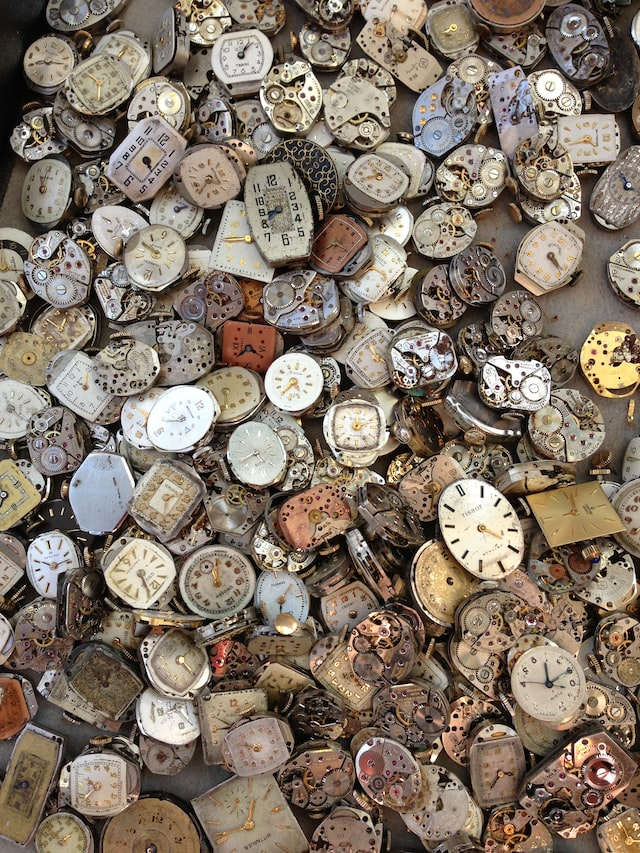
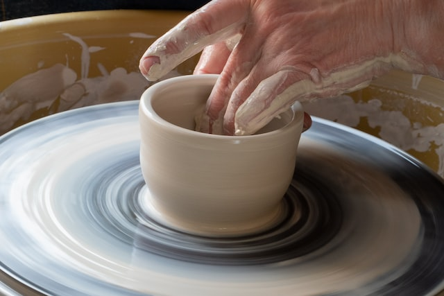
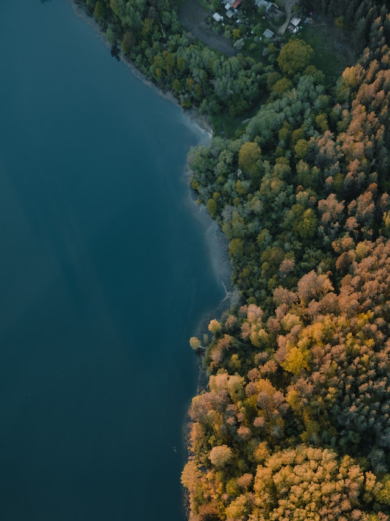

86400 sekundžių
Ar esi patenkintas kaip jas išnaudoji?
Išmanieji telefonai, kompiuteriai, televizoriai ir ekranai aplink mus suvalgo didelę dalį mūsų laiko ir kartais nepajuntame kur dingo mūsų poilsio diena, kurios taip ilgai laukėme ir planavome tiek daug nuveikti. Patogiai ir šiltai sėdint namuose lyg ir tingisi galvoti ką čia dabar veikti, bet dienos pabaigoje apima graužatis, kad nieko doro jau trečia savaitgalį iš eilės taip ir nenuveikta. Aplankyti galeriją(atidarytą prieš 3metus, nes vis nebuvo laiko), atrasti naują hobį, aplankyti nematytas Lietuvos kraštus ar trumpai susipažinti su svajonių šalimi- misija įmanoma.
Laikas

Reikia naujos suknelės, vazos, o gal dovanos draugui?
Tavęs laukia begalė užsiėmimų, būrėlių, mėgėjų susirinkimų įvairiom veiklom. Nori išmokti siūti, tereikia paieškoti aktyvios siuvėjų grupės, gal visad svajojai išmokti šokti valsą, bet neturiu partnerio? Šokių pamotos padės ne tik išmokti judesių, o atrasti draugų ir gal net gyvenimo partnerį. Sudaužei mylimą puodelį? Lekiam į keramikos užsiėmimus, pasigaminsim naują komplektą!
Keramikos pamokos

Ką matai aplink?
Pavargus nuo užsiėmimų, darbo ir draugų į pagalbą visada atkeliauja gamta ir jos ramybė. Tereikia susirasti žemėlapį, išsitraukti senus sportinius batelius ir išeiti pro duris. Net ir keliaudami takeliais, kuriuos miname kasdien galite atrasti kažką naujo. O Lietuvos gamta tikrai nuostabi!
Ką pamatyti Lietuvoje?

Turisto užrašai
O jeigu matytos gatvės, veidai ir ragauti Lietuviški patiekalai nusibodo, trumpos išvykos svetur padės pakeisti aplinką. Aplinkinės Europos valstybės pasiekiamos vos 1-2h trukmės skrydžiu lėktuvu, tad penktadienį iš ofisi galite keliauti ne ant sofos žiūrėti video apie nuotykius Kopenhagoje, o juos patirti!
Dviejų dienų kelionės